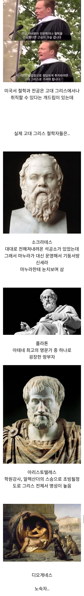

사실 전문 철학자로 먹고 사는건 없었다고

사실 전문 철학자로 먹고 사는건 없었다고
'줘'
주면 또 많이 줬다고 지랄함
레슬링 챔피언한테 삥 뜯으려면 얼마나 강해야 하냐
그리고 조금 달라고 했는데 많이 줬다고 쿠사리줌 ㅋㅋ
원래 배부르고 등따시면 다른 생각 드는거지
??? : 뭐래, 해 가리지말고 꺼져
??? : 배고픔도 이처럼 문질러서 해결된다면 좋았을 것을!
딸딸딸~~
주식 물려도 별 생각 다 들던데?
몸아프고 너무 힘들고 가난해도 인간존재이유, 세상 이치에 대해 고찰이 깊어짐
디오게네시스의 광장 노출 플레이는 매우 인상적이지
과거 수학자 철학자 이런걸로 알려진 사람들은 보통 본업이 따로 다 있는듯
보통 귀족들의 취미생활이었지ㅋㅋㅋ
고대 그리스에서 일은 노예가 집안일은 여자가 해서 젊은 남자들이 할게 없어서 ㅈ목질하다가 발전한게 민주정치임
노예가 개인재산이라 그런거없는 알거지 철학자들도 많았다고 하더라
군사적 특권 때문에 발생했다고 보는게 맞지 원래 귀족정 시절에는 말을 소유해서 전차를 탈 수 있는 부유한 귀족이 정치 권력을 독점했음
그러다 호플리테스라고 알려진 중장보병 메타가 오면서 귀족들의 군사적 독점이 깨짐 따라서 자연스럽게 호플리테스가 참정권을 얻게 됨
그리고 무역이 고도로 발달하면서 해군이 중요해지고 병사뿐만 아니라 노잡이까지 참정권을 얻게 됨
즉 군사적 봉사에 대한 대가로서 참정권이 주어진 거고 참정권을 얻은 사람의 수가 많기 때문에 민주정의 형태가 된거임
젊은 남자가 할거 없어서 ㅈ목으로 발전한게 민주정이라고? ㅋㅋㅋㅋㅋ
암만 능지 딸리는 애들이 하는게 인터넷 커뮤라지만 그딴 개소릴 진지하게 하는거냐? ㅋㅋㅋ
철학은 교수 아니면 본업을 하면서 취미로 하는게 맞는듯
셔터맨 건물주 학원강사 노숙자ㄷㄷㄷ 근데 왜 이해가 가지
철학관 차릴 돈이없었나 ㅋㅋ;;
플라톤 작명소 존나멋있다..
철학관 ㅋㅋㅋ
아리스토텔레스가 봐주는 사주 ㄷㄷ
소크라테스 아내가 악녀였다던데...다 이유가 있었네...
디오게네스는 대체... 다오게네스가 알렉산더 앞에서 땡깡?부렀다는 그 사람 아님?
일조권 보장 요구
그의 명성은 자자하여서, 알렉산드로스 대왕이 디오게네스를 찾아온 일이 있었다. 그는 양지 바른 곳에서 일광욕을 즐기고 있었다.
알렉산드로스: "짐은 알렉산드로스, 대왕이오."
디오게네스: "나로 말하자면 디오게네스, 개다."
알렉산드로스: "그대는 내가 무섭지 않은가?"
디오게네스: "당신은 뭐지? 좋은 것? 아님 나쁜 것?"
알렉산드로스: "물론 좋은 것이지."
디오게네스: "누가 좋은 것을 무서워하겠소?"
이에 알렉산드로스가 "무엇이든지 바라는 걸 나에게 말해 보라"고 하자, 디오게네스는 "햇빛을 가리지 말아주시오"라고 대답했다. 무엄한 저 자를 당장 처형해야 한다고 부하들이 나서자 알렉산드로스는 그들을 저지하며 말했다. "짐이 만약 알렉산드로스가 아니었다면, 디오게네스가 되고 싶었을 것이다."
걸물은 걸물임 ㅋㅋㅋ
알렉산더 지렸을듯
알렉산드로스도 같은 개씹테토남 알아봐서 감동받았음
현대에 철학자로 지칭하는 것이지 사실 '철학자'가 타이틀이 아니긴 하지...
학파를 이끈 거면 일종의 학원이고, 아예 본업이 따로있다거나(정치부터 생업까지)
학문이 세분화되기 전이라 어지간한 분야 다 섭렵했던 시기라서 엄밀히는 철학 전공도 아님
티배깅 전문가 소크라테스는 사실상 티배깅이 본인 직업이었고...
보통 군인 정치가 이런거랑 겸업했더라
당시 소크라테스는 중장보병으로 전쟁에 몇번 참여했을정도로 여유가 있었다
흑흑
소크라테스쉑 저러면서 알키비아데스같은 미청년들과 바람을 피고다녔네 죽어도싸다ㅋㅋ
먹고 살만 했으니까 철학 같은걸 할 짬이 났겠지
노숙자 이 미친새끼
디오게네스가 찐이구나
도대체 철학이란, 인생에서 무엇이란 말인걋...
(묵은 똥 싸갈기며...)
평론가 같은거지... 후원금 받거나, 일감 생기면 일하러 가는 프리랜서..
마이클 조던 = 지리학 전공
그렇겠지.. 이렇게 직업 다양하고 먹을거 넘쳐나는 현대사회에서 힘들면 고대에는 어땠겠나
"햇빛 가리지 말고 꺼져라"
철학뿐만 아니라 원래 학문이란게 먹고살걱정없는 귀족들이 하던거였음 그게 현대사회오면서 하층계급에게도 문이열린거고
아리스토텔레스도 1타강사 하기전부터 잘먹고 잘살았음
아부지가 마케도니아 왕실 주치의라 어려서부터 왕자랑 친구먹고 지냄
애초에 땅 다처먹어서 돈이 넘쳐나는 시대라 온갖 학문이 발달함
시민권만있어도 디오게네스처럼 살기 가능했을것 지금의 두바이처럼 생각해야됨
광장딸 치고 현타와서 한 말 : 굶주림도 이렇게 문질러서 해결되었다면 좋았을 것을…
인문학 위기 같은 소리가 허상인 이유지
애초에 노동과 관련없는 인간들의 신선놀음으로 출발한 학문이었음
디오게네스는 플라톤 찾아가서 삥 뜯더라